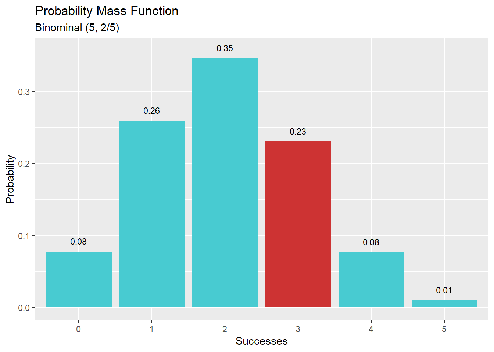
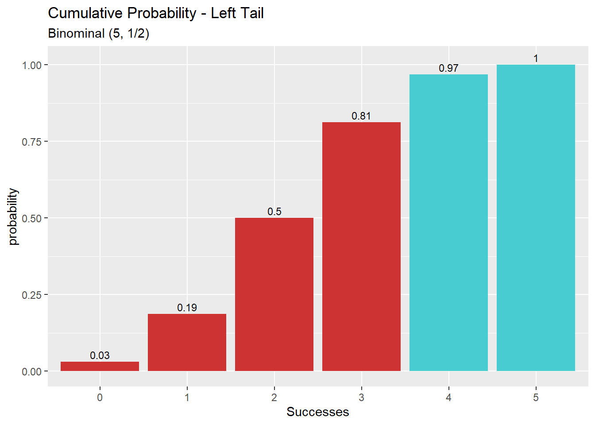
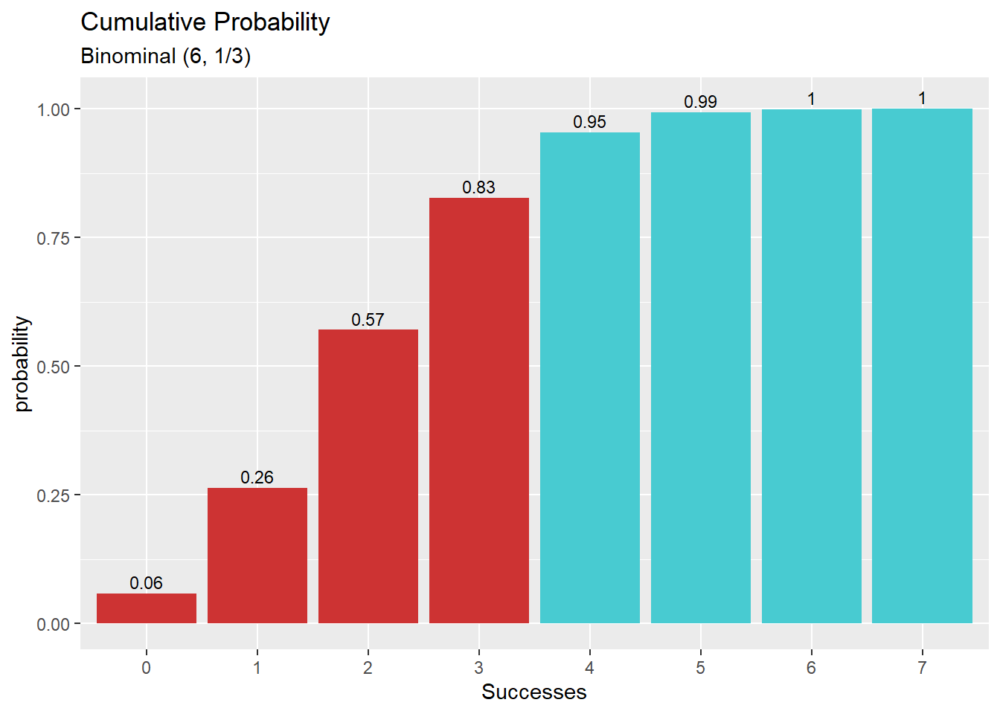
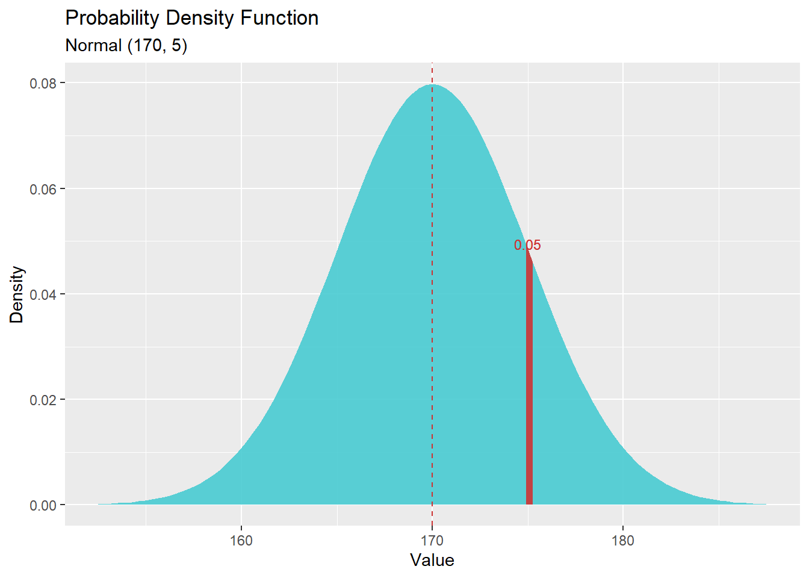

פרק 9 - משתנים מקריים והתפלגויות
9.1 התפלגות גיאומטרית
דגימה של ערכים מתוך התפלגות גיאומטרית
rgeom(n, prob)דוגמה: נדגום 10 פעמים מתוך התפלגות גיאומטרית עם סיכוי 1/6 להצלחה. כמה כשלונות לפני ההצלחה הראשונה יהיו בכל אחד מהמקרים?
rgeom(n=10, prob=1/6)## [1] 3 11 4 2 0 20 4 0 9 2מציאת הסתברות ספציפית
dgeom(x, prob, log = FALSE)דוגמא: ההסתברות למאורע של שלושה כשלונות לפני הצלחה כאשר הסיכוי להצלחה בודדת הוא 1/4
p = (1/4)
n = 3
dgeom(x = n, prob = p) # 0.1054688
הסתברות מצטברת עד לנקודה p
pgeom(q, prob, lower.tail = TRUE, log.p = FALSE)דוגמא: ההסתברות המצטברת של עד ארבעה כישלונות לפני הצלחה. (כלומר, הסיכוי לקבל ארבעה כשלונות לכל היותר לפני ההצלחה הראשונה. סכום ההסתברויות) מתוך התפלגות גיאומטרית עם הסתברות 1/3 להצלחה.
p = 1/3
n = 4
pgeom(q = n, prob = p, lower.tail = TRUE) # 0.8683128הסתברות מצטברת מנקודה p (כל הערכים שגדולים מ-p)
דוגמא: ההסתברות המצטברת של לפחות חמישה כישלונות לפני הצלחה. (כלומר, הסיכוי לקבל חמישה כשלונות או יותר לפני ההצלחה הראשונה. סכום ההסתברויות) מתוך התפלגות גיאומטרית עם הסתברות 1/3 להצלחה.
p = 1/3
n = 4
pgeom(q = n, prob = p, lower.tail = FALSE) # 0.1316872מציאת מספר הכשלונות לפני הצלחה בהתפלגות גיאומטרית תיאורטית, המתאים להסתברות מצטברת
qgeom(p, prob, lower.tail = TRUE, log.p = FALSE)זאת בעצם הפונקציה ההופכית של pgeom. כלומר - pgeom מקבלת מספר כשלונות ומחזירה את ההסתברות המצטברת. qgeom מקבלת הסתברות מצטברת ומחזירה מספר כשלונות תואם.
דוגמא: כמה כישלונות ייתקבלו לפני ההצלחה הראשונה בהסתברות מצטברת 0.8 כאשר ההסתברות להצלחה היא 0.2?
qgeom(p = 0.8, prob = .2)## [1] 7התיעוד הרשמי של הפונקציות dgeom, rgeom, pgeom, qgeom
9.2 התפלגות בינומית
דגימה של ערכים מתוך התפלגות בינומית
rbinom(n, size, prob)דוגמה: נדגום 5 פעמים מתוך התפלגות בינומית הכוללת 10 ניסויי ברנולי עם הסתברות 1/3 להצלחה. כמה הצלחות יהיו בכל אחד מהמקרים?
rbinom(n=5, size=10, prob=1/3)## [1] 4 2 5 5 2מציאת הסתברות ספציפית
dbinom(x, size, prob, log = FALSE)דוגמא: ההסתברות למאורע של בדיוק 3 הצלחות מתוך 7 ניסויי ברנולי עם הסתברות 3/5 להצלחה
p = (3/5)
size = 7
successes = 3
dbinom(x = successes, size = size, prob = p) # 0.193536
הסתברות מצטברת עד לנקודה p
pbinom(q, size, prob, lower.tail = TRUE, log.p = FALSE)דוגמא: ההסתברות המצטברת של עד 3 הצלחות. (כלומר, הסיכוי לקבל שלוש הצלחות לכל היותר. סכום ההסתברויות) מתוך התפלגות בינומית הכוללת 6 ניסויי ברנולי עם הסתברות 2/3 להצלחה.
p = 2/3
n = 3
size = 6
pbinom(q = n, size = size, prob = p, lower.tail = TRUE) # 0.3196159
הסתברות מצטברת מנקודה p (כל הערכים שגדולים מ-p)
דוגמא: ההסתברות המצטברת של לפחות 4 הצלחות. (כלומר, הסיכוי לקבל יותר מ-3 הצלחות) מתוך התפלגות בינומית הכוללת 7 ניסויי ברנולי עם הסתברות 1/2 להצלחה.
p = 1/2
n = 3
size = 7
pbinom(q = n, size = size, prob = p, lower.tail = FALSE) # 0.5
מציאת מספר ההצלחות בהתפלגות בינומית תיאורטית, המתאים להסתברות מצטברת
qbinom(p, size, prob, lower.tail = TRUE, log.p = FALSE)זאת בעצם הפונקציה ההופכית של pbinom. כלומר - pbinom מקבלת מספר הצלחות ומחזירה את ההסתברות המצטברת. qbinom מקבלת הסתברות מצטברת ומחזירה מספר הצלחות תואם.
דוגמא: כמה הצלחות ייתקבלו בהסתברות מצטברת 0.7 מתוך התפלגות בינומית הכוללת 7 ניסויי ברנולי עם הסתברות 1/3 להצלחה. (או - מה הוא מספר ההצלחות שמעליו נמצאים 30% מהערכים האפשריים)
qbinom(p = 0.7, size=7, prob = 1/3)## [1] 39.3 התפלגות נורמלית
דגימה של ערכים מתוך התפלגות נורמלית
rnorm(n, mean = 0, sd = 1)דוגמה: נדגום 300 ערכים מתוך התפלגות נורמלית עם תוחלת 60 וסטיית תקן 6.
הערה: ברירת המחדל של הפונקציה היא לדגום מתוך התפלגות נורמלית סטנדרטית (תוחלת 0 וסטיית תקן 1)
n = 300
mean = 60
sd = 6
norm_sample <- rnorm(n=n, mean=mean, sd=sd)
# print the first 20 items
print(norm_sample[0:20])## [1] 63.57442 66.02607 66.57421 64.82201 59.35782 62.20865 68.42585 60.20255
## [9] 65.09590 55.69509 46.75206 49.20084 54.55330 54.68228 51.25400 59.41590
## [17] 68.37518 58.69086 56.86264 55.21765אלו היו עשרים הערכים הראשונים מתוך 300 הערכים במדגם.
שימו לב שממוצע המדגם לא יהיה 60, אלא רק קרוב ל60, ההתפלגות הנורמלית התיאורטית מייצגת אין סוף ערכים, בעוד שאנחנו דגמנו מקרית מספר סופי של ערכים.
גם סטיית התקן של המדגם תהיה קרובה ל-6 ולא זהה ל-6. בדיוק מאותה סיבה.
כמו כן, צורת ההתפלגות קרובה לנורמלית

מציאת צפיפות של ערך
dnorm(x, mean = 0, sd = 1, log = FALSE)דוגמא: הצפיפות של הערך 175, מתוך התפלגות נורמלית עם תוחלת 170 וסטיית תקן 5
dnorm(x=175, mean=170, sd=5)## [1] 0.04839414
מציאת הסתברות מצטברת עד ערך
pnorm(q, mean = 0, sd = 1, lower.tail = TRUE, log.p = FALSE)דוגמא: ההסתברות לדגום ערך שקטן או שווה ל-120 מתוך התפלגות נורמלית עם תוחלת 100 וסטיית תקן 12.
הערה - שימו לב שמדובר בהסתברות מצטברת, ולא בצפיפות, אפילו שמדובר בהתפלגות רציפה
q=120
mean=100
sd=12
pnorm(q = q, mean = mean, sd = sd)## [1] 0.9522096
מציאת ערך תואם להתסברות מצטברת (מאון)
qnorm(p, mean = 0, sd = 1, lower.tail = TRUE, log.p = FALSE)דוגמא: עבור איזה ערך מתוך התפלגות נורמלית עם תוחלת 200 וסטיית תקן 30, ההתסתברות המצטברת היא 50%? (כלומר, עד אליו יתקבלו 50% מהערכים).
במילים אחרות - מה הוא הערך במאון ה-50 (החציון) עבור התפלגות נורמלית זו.
הערה - זאת הפונקציה ההופכית של pnorm. הפונקציה pnorm מקבלת ערך ומחזירה את הההסתברות המצבטרת עד אליו, qnorm מקבלת הסתברות מצטברת ומחזירה את הערך התואם אליה
p=0.5
mean=200
sd=30
q = qnorm(p = p, mean = mean, sd = sd)
print(q)## [1] 200בהתפלגות נורלית תיאורטית התוחלת שווה לחציון (וגם לשכיח) ולכן הערך במאון ה-50 יהיה 200.